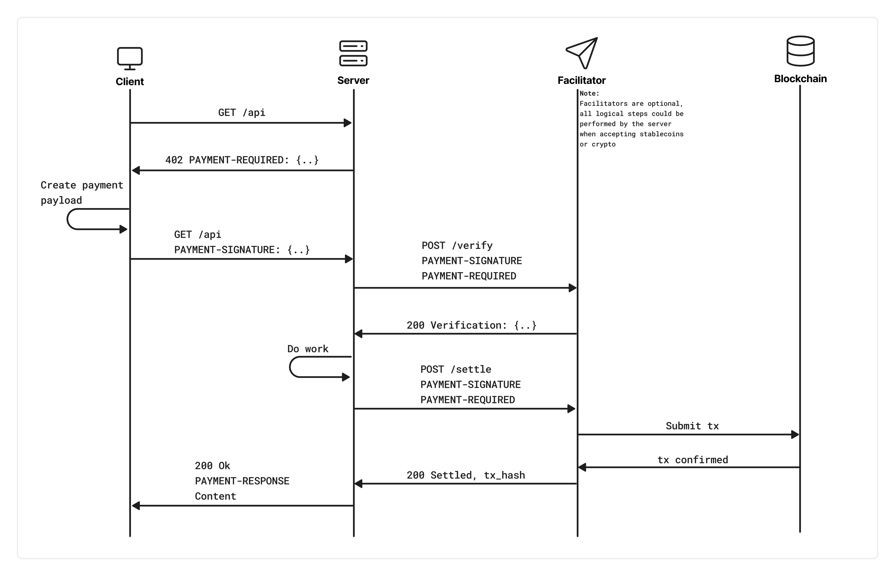

AI Agents Pay Their Own Bills — x402 Embeds a Wallet into HTTP
2026.04 · Pebblous Research
Reading time: ~10 min · 한국어
Executive Summary
In May 2025, Coinbase dusted off a status code that had sat unused for three decades. HTTP 402 — "Payment Required." Left in the original HTTP spec as a placeholder for a future paid internet, it was forgotten the moment credit cards took over. Now it's back — as the autonomous payment standard for AI agents.
x402 works simply: a server responds to an API request with 402; the client (an agent) automatically sends USDC and gains access. No account creation, no API key management, no human in the loop. V2 launched in December 2025. On April 2, 2026, x402 joined the Linux Foundation with Google, AWS, Microsoft, Stripe, Visa, Mastercard, KakaoPay, and 20+ others as founding members.
This post covers how x402 actually works, which services are using it, whether it works in Korea, and what it changes for data businesses.
1. The Resurrection of HTTP 402 — A Status Code Three Decades Late
HTTP status codes like 404 (Not Found) and 500 (Internal Server Error) are part of everyday internet life. But 402 is different. When HTTP was designed in 1991, its authors reserved this code with the expectation that a paid internet would eventually arrive. It never did — credit cards and subscription models took over, and 402 gathered dust for 30 years.
Coinbase recognized that this code's moment had finally come. The dominant actors on the internet are shifting from humans to AI agents. Agents don't create accounts. They don't go through KYC. They don't enter credit card numbers. But they do make HTTP requests — and if payment can be embedded in those requests, the way the internet handles money changes fundamentally.
x402's core premise
"Payments on the internet are fundamentally flawed. Filling out a form is a human behavior that doesn't match the programmatic nature of the internet. It's time for an open, internet-native form of payments."
— x402.org
1.1 The Problem with the Old Way
Old way (5 steps)
- 1. Create account with API provider
- 2. Add payment method, wait for KYC
- 3. Buy credits or choose subscription
- 4. Manage API keys securely
- 5. Pay — slow, fees, chargebacks
x402 way (3 steps)
- 1. HTTP request → server responds 402
- 2. Agent sends USDC instantly
- 3. API access granted — no accounts or keys
1.2 One Year of Growth

2. How It Actually Works — Protocol Anatomy
x402 follows the HTTP request-response cycle exactly. It's not a new communication protocol — it layers payment on top of existing HTTP.
2.1 The 5-Step Payment Flow
Client → Server: HTTP request
The agent sends a normal GET/POST request to a paid API endpoint.
Server → Client: 402 Payment Required
The server responds with machine-readable payment terms.
HTTP/1.1 402 Payment Required
Content-Type: application/json
{
"accepts": [{
"scheme": "exact",
"network": "base-mainnet",
"maxAmountRequired": "1000000", // $1.00 USDC
"asset": "0x833589...USDC",
"payTo": "0xMerchantAddress"
}],
"description": "Weather data - 1 request"
}Client → Server: Retry with payment header
The agent executes an on-chain USDC transfer and re-sends the original request with a payment authorization header.
Payment facilitator: verify and settle
The Coinbase CDP facilitator (or a third-party) verifies the payment payload and confirms on-chain settlement.
Server → Client: 200 OK + resource
After settlement confirmation, the server returns the requested data. The entire flow completes in seconds.

2.2 One Line of Code to Add a Paywall
app.use(
paymentMiddleware({
"GET /weather": {
accepts: [{ network: "base-mainnet", asset: "USDC", maxAmount: "1.00" }],
description: "Weather data per request"
},
"GET /analytics": {
accepts: [{ network: "base-mainnet", asset: "USDC", maxAmount: "0.10" }],
description: "Analytics query"
}
})
);2.3 What's New in V2
- • Wallet-based sessions: Pay once, and the same agent maintains access without re-paying every call
- • Dynamic payTo routing: Recipient and amount determined per-request — perfect for marketplaces and multi-tenant APIs
- • Multi-chain by default: Base, Solana, Polygon, and other L2s without custom code
- • Legacy rail compatibility: ACH, SEPA, and card payments via the same interface (deferred payment scheme)
- • Plugin-driven SDK: Add new chains and payment methods without touching the core spec
3. Robots Settling Their Own Bills — The Agent Economy in Action
The most dramatic x402 demonstration comes from OpenMind's robot dog "Bits." When its battery ran low, Bits autonomously located the nearest charging station, plugged itself in, and paid for electricity in USDC — without any human intervention. HTTP request → 402 response → USDC transfer → charging begins. This is the agent economy, made tangible.
Agent autonomous payment scenarios
An AI assistant buys Halloween accessories from multiple merchants — paying each store's API via 402, auto-ordering.
An AI trading agent subscribes to real-time financial data one request at a time, paying per query.
A browser rendering agent pays per session instead of committing to a monthly subscription.
3.1 Key Services in the Ecosystem
Native x402 support in Workers and the Agents SDK. MCP servers can expose paid tools. Pioneering pay-per-crawl — web crawlers pay per page read rather than subscribing monthly.
x402-next middleware adds a paywall to any Next.js API route in one line. x402-fetch wrapper handles automatic payment for paid endpoints on the client side.
Blockchain analytics and research APIs gated via x402. AI agents buy on-chain intelligence per query without subscription tiers.
x402 integrated with Stripe's Agent Commerce Protocol (ACP). Traditional fiat payment rails and stablecoin payments handled through a unified interface.
3.2 MCP + x402 — Tools with Price Tags
The combination of Model Context Protocol (MCP) and x402 is particularly noteworthy. Individual tools on an MCP server can now carry explicit price tags that AI agents pay automatically.
// MCP server: mix free and paid tools
this.server.paidTool(
"advanced-analysis",
"Deep data analysis with proprietary models",
0.05, // $0.05 per call
{ dataset: z.string() },
{},
async ({ dataset }) => { /* analysis logic */ }
);When an agent calls a paid tool, the MCP server responds with 402. The agent automatically pays and retries. Whether to require human confirmation is a configuration option.
4. The Data Economy's New Payment Layer
x402's impact on data businesses goes beyond payment convenience. It's a lever for redesigning the business model itself.
4.1 From Subscriptions to Pay-Per-Query
Most data APIs today run on monthly subscriptions. Heavy use costs less per query, but light use means waste. x402 enables true pay-per-query — pricing each query, each analysis, each dataset exactly.
$500/month subscription
→ 1,000 queries available
→ Use only 100 → still pay $500
$0.50 per query
→ Use 100 queries → $50
→ Agent pays automatically
4.2 What Changes for Data Marketplaces
- • Dataset access gates — protect datasets behind x402 endpoints; agents buy exactly what they need
- • Real-time data streams — sell financial ticks and sensor data per event or per second
- • AI model inference — sell proprietary model outputs as paid API calls
- • Data quality validation — services like DataClinic auto-inserted into agent pipelines as paid quality gates
4.3 Agents Autonomously Purchasing Data Quality
Imagine a manufacturer's AI agent querying a data quality diagnostic API before running a defect prediction model. It sends a request; gets a 402; pays $0.30; receives a diagnostic report. If quality falls below threshold, it automatically calls a data cleaning API and pays again. Data pipeline quality gating, fully automated — no human required.
5. Korea's Angle — KakaoPay and the KRW Stablecoin Future
Bottom line: Technically usable today. Regulatory environment makes 2026 a pivotal year.
5.1 KakaoPay — A Linux Foundation Founding Member
KakaoPay appeared on the list of founding members when x402 joined the Linux Foundation on April 2, 2026 — alongside Visa, Mastercard, American Express, Google, AWS, and Stripe. This isn't ceremonial. It signals that KakaoPay has publicly committed to exploring x402-based agent payment integration into its platform.
x402 Linux Foundation Founding Members (2026.04.02)
5.2 The KRW Stablecoin Synergy
- • Visa publicly called Korea "the optimal country for stablecoin experimentation" (April 2026)
- • KB, Shinhan, Hana, and Toss are all developing KRW-pegged stablecoins
- • Korea's Digital Asset Basic Act is being legislated — KRW stablecoin issuance requirements being codified
- • x402 V2's plugin-driven SDK means adding a KRW facilitator requires no core spec changes
6. Pebblous Perspective — What DataClinic Should Prepare For
x402 creates a concrete business opportunity for DataClinic, Pebblous's core service.
6.1 The DataClinic MCP + x402 Scenario
DataClinic already has the infrastructure for dataset diagnostics and quality evaluation. Exposing it as an MCP server and monetizing it via x402 is a clear path forward.
Publish a DataClinic MCP server — register tools like "diagnose_dataset", "get_quality_score", "compare_classes"
Price each tool via x402 — e.g., diagnostic report at $0.50, per-class analysis at $0.10
Global AI agents automatically call DataClinic diagnostics mid-pipeline → USDC revenue generated
6.2 What to Explore Now
- • Open a Coinbase CDP developer account → test x402's free tier (1,000 transactions/month)
- • PoC: add x402 middleware to a DataClinic API endpoint — one line of Node.js code
- • Monitor KakaoPay's x402 roadmap — integrate their facilitator when KRW payments go live
- • Deploy a lightweight DataClinic API on Cloudflare Workers → global x402 pay-per-query access point
About DataClinic
DataClinic is Pebblous's AI/ML dataset quality diagnostic service. It automatically detects class imbalance, outliers, and quality issues in training data — images, text, and tabular formats. When x402-based pay-per-query becomes the norm, DataClinic becomes a quality gating infrastructure that AI agent pipelines worldwide can plug into automatically.
Explore DataClinic →FAQ
Do I need crypto knowledge to use x402?
On the server side, it's an npm package install and one line of middleware code. On the client side, you create a Coinbase CDP account and connect a USDC wallet. You can interact with it entirely through an API without deep blockchain knowledge.
What are the fees?
The x402 protocol itself has no fees. Gas on Base is under $0.001 per transaction. Coinbase CDP offers a free tier of 1,000 transactions/month, with small per-transaction fees beyond that. The @x402 npm packages are open source.
How is x402 different from Google's AP2?
Google launched AP2 (Autonomous Payment Protocol) as a separate standard, but AP2's stablecoin extension is explicitly designed to be compatible with x402. With Google joining the x402 Linux Foundation, the ecosystem is effectively converging on x402 as the shared standard.
Is there a risk that x402 stays crypto-only?
x402 V2 explicitly adds deferred payment schemes compatible with ACH, SEPA, and cards — alongside stablecoins. With Visa, Mastercard, American Express, Stripe, and Adyen as founding members of the Linux Foundation governance body, the intent is clearly to be a universal internet payment standard, not a crypto-only protocol.